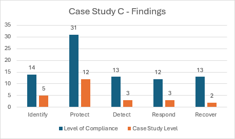

Case Study C
Case Study C is another football club competing in the fourth division of the Scottish Football Pyramid, the Scottish League 2. A similar size club to Case Study A regarding name and resources available, the gap analysis undertaken here also reflects a relatively similar one to that of the aforementioned case study.

From the above figure, we can clearly see a comparison between Case Studies A and C - this was not a surprising outcome to the researcher. Where this case study improves in the categories of identify, protect and detect, it fall shorts in the categories of respond and recover in comparison to Case Study A. This case study has an adherence percentage of 30.1% - an improvement on the first case study, but only by 2 total requisites.
Another similar situation as Case Study A, only a certain level of resources are available to this football club in comparison to the internationally known clubs, and so compromises may have to be made when allocating resources to ensure a robust security strategy is formed.